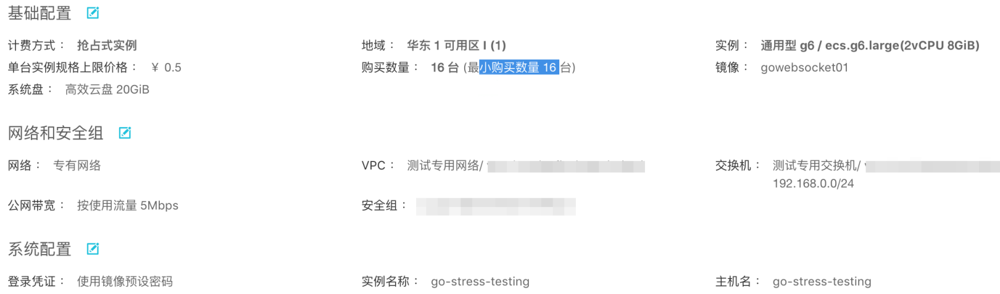
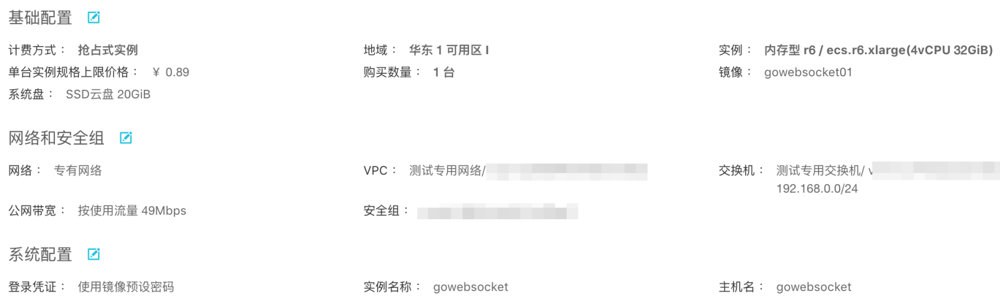
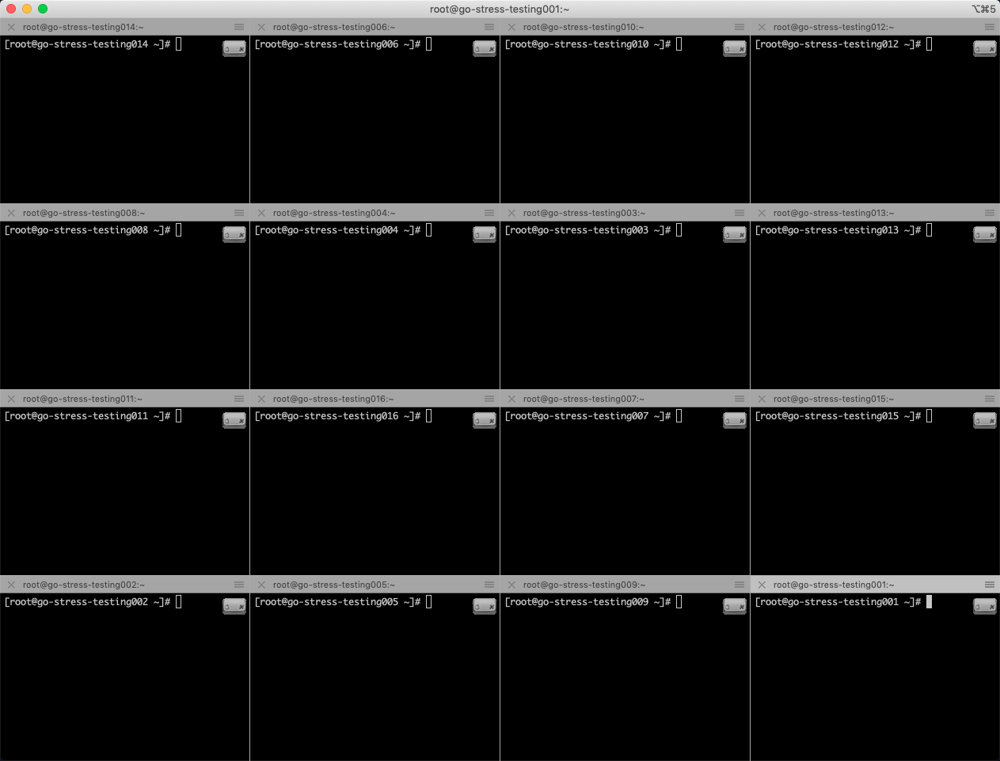
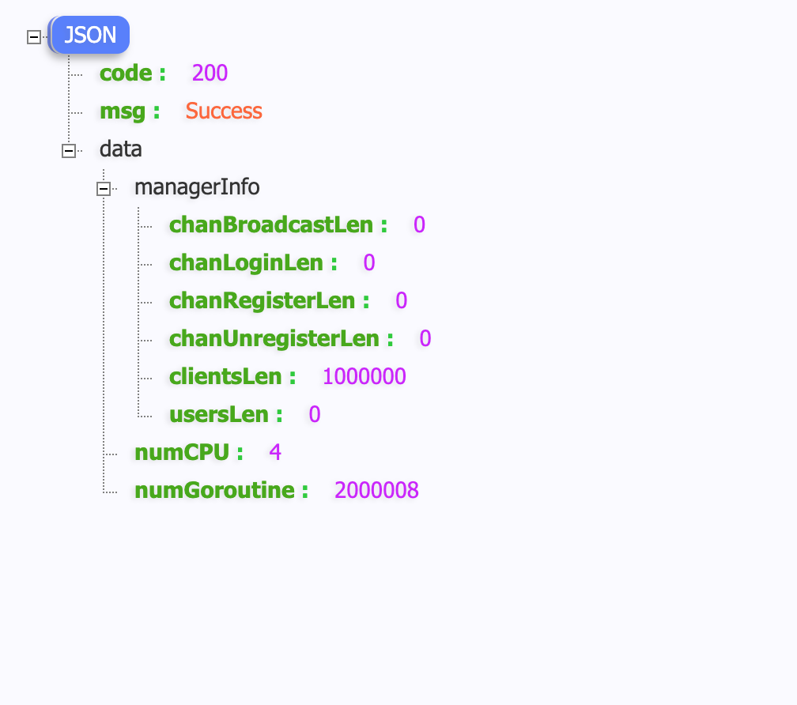
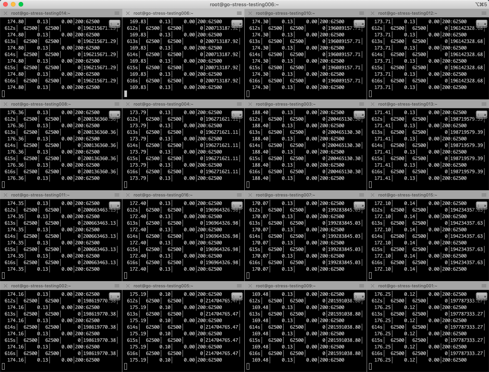
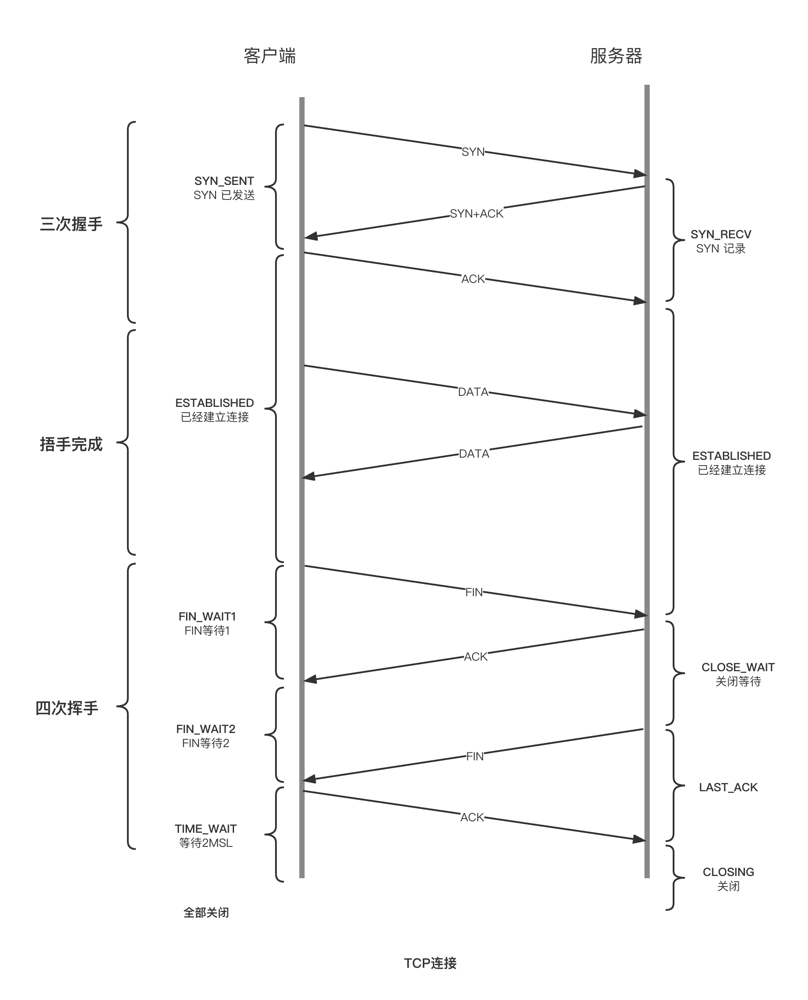

分布式聊天（IM）系统压测实例
实现单台机器支持100W连接的压测
目标：
单台机器能保持100W长链接
机器的CPU、内存、网络、I/O 状态都正常
说明:
gowebsocket 分布式聊天(IM)系统:
之前用户连接以后有个全员广播，这里需要将用户连接、退出等事件关闭
服务器准备
压测服务器:
16台
CPU: 2核 内存: 8G 硬盘: 20G 系统: CentOS 7.6

被压测服务:
1台
CPU: 4核 内存: 32G 硬盘: 20G SSD 系统: CentOS 7.6

内核优化
- 修改程序最大打开文件数
被压测服务器需要保持100W长连接，客户和服务器端是通过socket通讯的，每个连接需要建立一个socket，程序需要保持100W长连接就需要单个程序能打开100W个文件句柄
1 | # 查看系统默认的值 |
这里设置的要超过100W，程序除了有100W连接还有其它资源连接(数据库、资源等连接)，这里设置为 104W
centOS 7.6 上述设置不生效，需要手动修改配置文件
1 | vim /etc/security/limits.conf |
这里需要把硬限制和软限制、root用户和所有用户都设置为 1040000
core 是限制内核文件的大小，这里设置为 unlimited
1 | # 添加以下参数 |
注意:
/proc/sys/fs/file-max 表示系统级别的能够打开的文件句柄的数量，不能小于limits中设置的值
如果file-max的值小于limits设置的值会导致系统重启以后无法登录
1 | # file-max 设置的值参考 |
修改以后重启服务器，ulimit -n 查看配置是否生效
客户端配置
由于linux端口的范围是 0~65535(2^16-1)这个和操作系统无关，不管linux是32位的还是64位的
这个数字是由于tcp协议决定的，tcp协议头部表示端口只有16位，所以最大值只有65535(如果每台机器多几个虚拟ip就能突破这个限制)
1024以下是系统保留端口，所以能使用的1024到65535
如果需要100W长连接，每台机器有 65535-1024 个端口， 100W / (65535-1024) ≈ 15.5，所以这里需要16台服务器
vim /etc/sysctl.conf在文件末尾添加
1 | net.ipv4.ip_local_port_range = 1024 65000 |
sysctl -p 修改配置以后使得配置生效命令
配置解释:
ip_local_port_range表示TCP/UDP协议允许使用的本地端口号 范围:1024~65000tcp_mem确定TCP栈应该如何反映内存使用，每个值的单位都是内存页（通常是4KB）。第一个值是内存使用的下限；第二个值是内存压力模式开始对缓冲区使用应用压力的上限；第三个值是内存使用的上限。在这个层次上可以将报文丢弃，从而减少对内存的使用。对于较大的BDP可以增大这些值（注意，其单位是内存页而不是字节）tcp_rmem为自动调优定义socket使用的内存。第一个值是为socket接收缓冲区分配的最少字节数；第二个值是默认值（该值会被rmem_default覆盖），缓冲区在系统负载不重的情况下可以增长到这个值；第三个值是接收缓冲区空间的最大字节数（该值会被rmem_max覆盖）。tcp_wmem为自动调优定义socket使用的内存。第一个值是为socket发送缓冲区分配的最少字节数；第二个值是默认值（该值会被wmem_default覆盖），缓冲区在系统负载不重的情况下可以增长到这个值；第三个值是发送缓冲区空间的最大字节数（该值会被wmem_max覆盖）。
准备
在被压测服务器上启动Server服务(gowebsocket)
查看被压测服务器的内网端口
登录上16台压测服务器，这里我提前把需要优化的系统做成了镜像，申请机器的时候就可以直接使用这个镜像(参数已经调好)

启动压测
1 | ./go_stress_testing_linux -c 62500 -n 1 -u ws://192.168.0.74:443/acc |
62500*16 = 100W正好可以达到我们的要求
建立连接以后，-n 1发送一个ping的消息给服务器，收到响应以后保持连接不中断
- 通过 gowebsocket服务器的http接口，实时查询连接数和项目启动的协程数
- 压测过程中查看系统状态
1 | # linux 命令 |
压测数据
- 压测以后，查看连接数到100W，然后保持10分钟观察系统是否正常
- 观察以后，系统运行正常、CPU、内存、I/O 都正常，打开页面都正常
- 压测完成以后的数据
查看goWebSocket连接数统计，可以看到 clientsLen连接数为100W，goroutine数量2000008个，每个连接两个goroutine加上项目启动默认的8个。这里可以看到连接数满足了100W

从压测服务上查看连接数是否达到了要求，压测完成的统计数据并发数为62500，是每个客户端连接的数量,总连接数： 62500*16=100W，

记录内存使用情况，分别记录了1W到100W连接数内存使用情况
连接数 内存 10000 281M 100000 2.7g 200000 5.4g 500000 13.1g 1000000 25.8g
100W连接时的查看内存详细数据:
1 | cat /proc/pid/status |
27133804/1000000≈27.1 100W连接，占用了25.8g的内存，粗略计算了一下，一个连接占用了27.1Kb的内存，由于goWebSocket项目每个用户连接起了两个协程处理用户的读写事件，所以内存占用稍微多一点
如果需要如何减少内存使用可以参考 @Roy11568780 大佬给的解决方案
传统的golang中是采用的一个goroutine循环read的方法对应每一个socket。实际百万链路场景中这是巨大的资源浪费，优化的原理也不是什么新东西，golang中一样也可以使用epoll的，把fd拿到epoll中，检测到事件然后在协程池里面去读就行了，看情况读写分别10-20的协程goroutine池应该就足够了
至此，压测已经全部完成，单台机器支持100W连接已经满足~
常见问题
- Q: 压测过程中会出现大量 TIME_WAIT
A: 参考TCP四次挥手原理，主动关闭连接的一方会出现 TIME_WAIT 状态，等待的时长为 2MSL(约1分钟左右)
原因是：主动断开的一方回复 ACK 消息可能丢失，TCP 是可靠的传输协议，在没有收到 ACK 消息的另一端会重试，重新发送FIN消息，所以主动关闭的一方会等待 2MSL 时间，防止对方重试，这就出现了大量 TIME_WAIT 状态（参考: 四次挥手的最后两次）
TCP握手:

- Q: 没有go环境无法使用最新功能
A： 可以使用Dockerfile构建一个容器镜像，假设容器镜像名称为gostress:1111，docker build -t gostress:1111 . 启动一个名称为go-stress的容器docker run -d –name=go-stress gostress:1111 开始压测 docker exec -it go-stress -c 10 -n 10 -u www.baidu.com
总结
到这里压测总算完成，本次压测花费16元巨款。
单台机器支持100W连接是实测是满足的，但是实际业务比较复杂，还是需要持续优化~
本文通过介绍什么是压测，在什么情况下需要压测，通过单台机器100W长连接的压测实战了解Linux内核的参数的调优。如果觉得现有的压测工具不适用，可以自己实现或者是改造成属于自己的自己的工具。